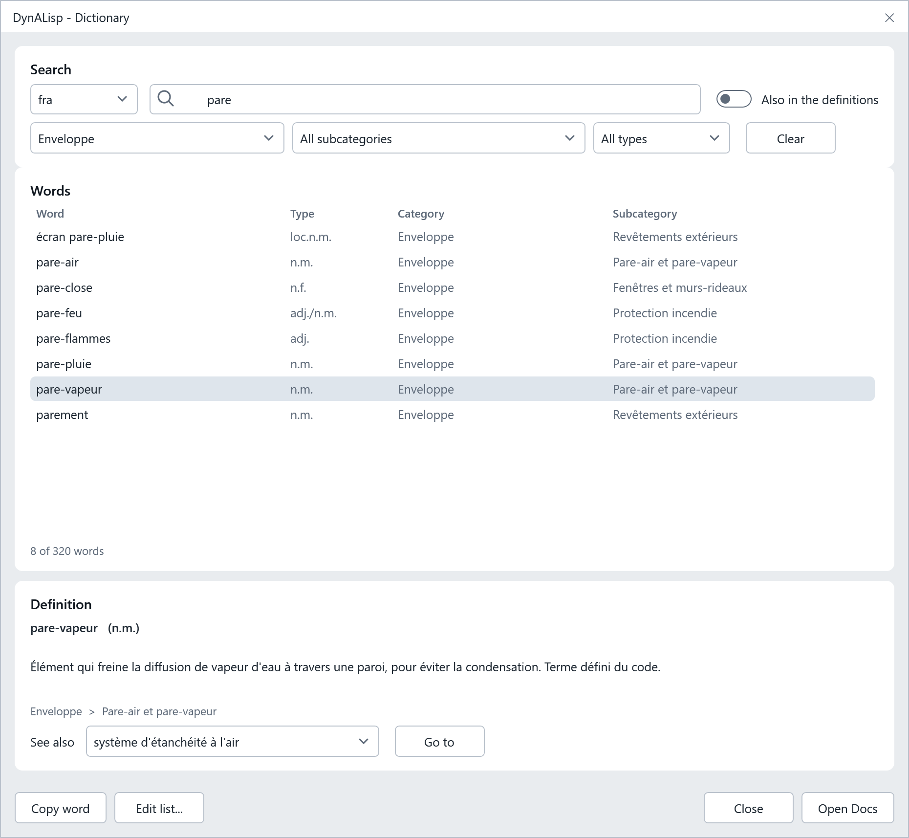

Dictionnaire (Dictionary)
| Syntaxe | DYL-DICTIONARY (DICO) |
| Requis | AutoCAD 2025 ou plus récent pour Windows |
| État | Nouveau – voir Limites connues |
| Licence | Licence publique générale GNU v3 |
Description
Cherchez les mots que connaît le correcteur de DynALisp, avec leur définition : environ 2 450 mots français d'architecture et de construction et 260 expressions.

Utilisation
- Tapez DICO.
- Tapez un mot, ou une partie : vitr trouve vitrage et vitrail. Les accents ne comptent pas.
- Choisissez un mot pour le lire ; Copy word le copie dans le presse-papiers.
Bon à savoir
- Edit list... ouvre la liste dans Excel : enregistrez-la en CSV UTF-8.
- Un mot ajouté au dictionnaire dans AutoCAD y reçoit sa définition.
- Les définitions sont des notes de travail, pas une terminologie officielle.
- Français seulement pour l'instant.
Noms des commandes et alias
Les noms courts sont des alias de la commande : modifiez-les dans Dyl-Suite.
| Commande | Alias | Nom |
|---|---|---|
| Dyl-Dictionary | DICO | Dictionary |